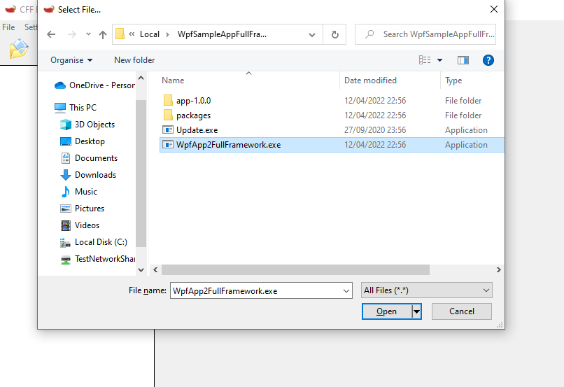
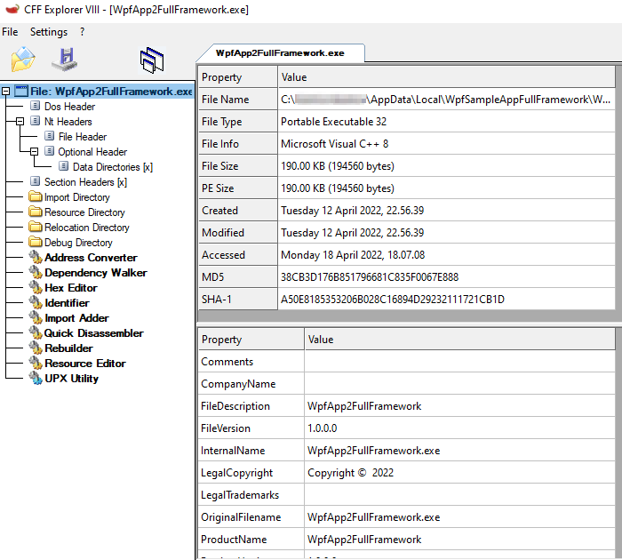
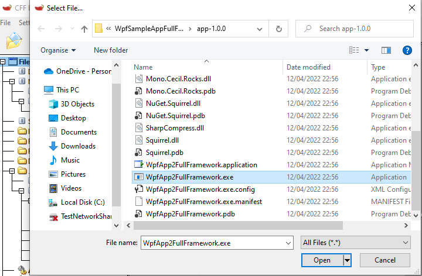
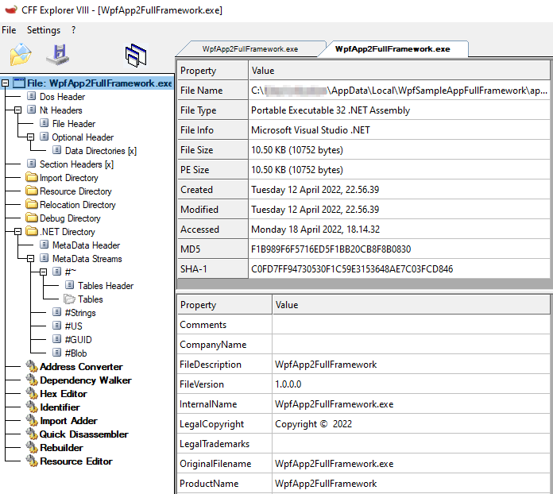

Understanding Penetration Test Reports as a developer
In the Pentest reports I have read it has been common for the first section to be about identifying the technology the application is written in, this is used to make some initial suggestions on shortcomings in the application.
For me, as a .NET developer writing WPF applications, it was surprising to see it be reported repeatedly that our application was discovered to be written in Microsoft Visual C++ 8 and that we failed to implement protection like SafeSEH and ControlFlowGuard.
As much as I wanted to say wanted to say we don't write our software in C++ so these findings were not valid I dug deeper into the reports to understand why multiple pentests by multiple suppliers returned the same result.
Binary Identification
I have seen a few methods of identifying the language used to develop an application, first of which is CFF Explorer.
CFF Explorer
This has been used each time the binary has been misidentified as C++ when it was actually written in C#, however it is not a fault with CFF Explorer, it is simply that the wrong executable had been analysed.




Grep on WSL
While I am working Windows to build a WPF application I can still use useful Linux commands like file and grep through WSL to find out more about a file.
mburton@zitherldwx01:/mnt/c/Users/anon/AppData/Local/WpfSampleAppFullFramework$ ls
Update.exe WpfApp2FullFramework.exe app-1.0.0 packages
mburton@zitherldwx01:/mnt/c/Users/anon/AppData/Local/WpfSampleAppFullFramework$ file WpfApp2FullFramework.exe
WpfApp2FullFramework.exe: PE32 executable (GUI) Intel 80386, for MS Windows
mburton@zitherldwx01:/mnt/c/Users/anon/AppData/Local/WpfSampleAppFullFramework$ cd app-1.0.0/
mburton@zitherldwx01:/mnt/c/Users/anon/AppData/Local/WpfSampleAppFullFramework/app-1.0.0$ file WpfApp2FullFramework.exe
WpfApp2FullFramework.exe: PE32 executable (GUI) Intel 80386 Mono/.Net assembly, for MS Windows
mburton@zitherldwx01:/mnt/c/Users/anon/AppData/Local/WpfSampleAppFullFramework/app-1.0.0$ file *.dll | grep "Mono/.Net" | wc -l
10
mburton@zitherldwx01:/mnt/c/Users/anon/AppData/Local/WpfSampleAppFullFramework/app-1.0.0$ ls *.dll
DeltaCompressionDotNet.MsDelta.dll Mono.Cecil.Mdb.dll Mono.Cecil.dll Squirrel.dll
DeltaCompressionDotNet.PatchApi.dll Mono.Cecil.Pdb.dll NuGet.Squirrel.dll
DeltaCompressionDotNet.dll Mono.Cecil.Rocks.dll SharpCompress.dll
mburton@zitherldwx01:/mnt/c/Users/anon/AppData/Local/WpfSampleAppFullFramework/app-1.0.0$ file *.dll | grep "Mono/.Net" | wc -l
10
Binary Security
Having identified the binary the reports then flag security options which have not been used. This can be done using a PowerShell Module PESecurity
WARNING!!! Use [PESecurity](https://github.com/NetSPI/PESecurity.git) at your own risk, read the code yourself before you use it!
PS C:\Source\GitRepos\PESecurity> Get-PESecurity -file $env:LOCALAPPDATA\WpfSampleAppFullFramework\app-1.0.0\WpfApp2FullFramework.exe
FileName : $env:LOCALAPPDATA\WpfSampleAppFullFramework\app-1.0.0\WpfApp2FullFramework.exe
ARCH : I386
DotNET : True
ASLR : True
DEP : True
Authenticode : False
StrongNaming : False
SafeSEH : N/A
ControlFlowGuard : N/A
HighentropyVA : N/A
PS C:\Source\GitRepos\PESecurity> Get-PESecurity -file $env:LOCALAPPDATA\WpfSampleAppFullFramework\WpfApp2FullFramework.exe
FileName : $env:LOCALAPPDATA\WpfSampleAppFullFramework\WpfApp2FullFramework.exe
ARCH : I386
DotNET : False
ASLR : True
DEP : True
Authenticode : False
StrongNaming : N/A
SafeSEH : True
ControlFlowGuard : False
HighentropyVA : N/A
The Cause of the misidentification
The application installer is built using Squirrel, the file being opened in CFF Explorer is part of the Squirrel installer as described in the Installing Documentation.
The actual application executable is in the application version subdirectory app-n.n.n.
How to fix it?
I had a very constructive discussion with caesay who is one of the maintainers of Clowd.Squirrel, a fork of Squirrel.Windows moments after our discussion this commit Enable ControlFlowGuard for Setup.exe was made.